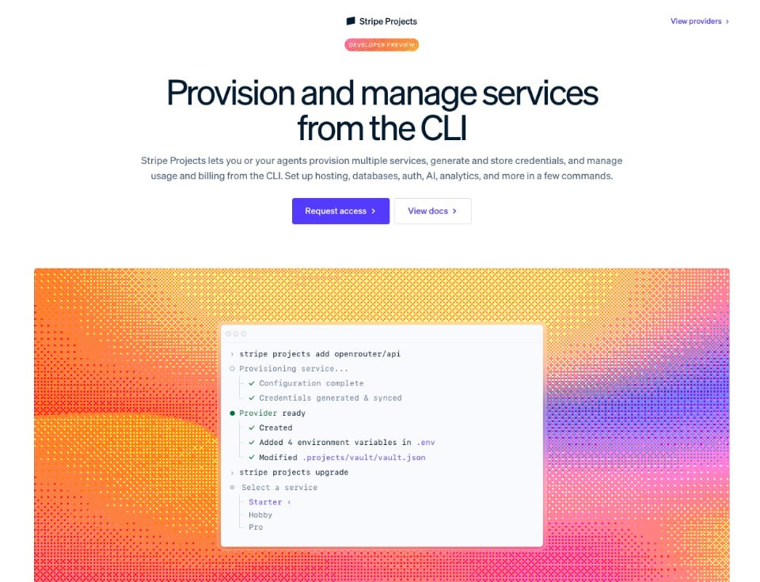

Executive Summary
Bloomberg reported on August 16 that Stripe had finalized a deal to buy OpenRouter for more than $7 billion, and TechCrunch picked up the report. OpenRouter is a routing gateway that spreads requests across hundreds of models through a single API. Three months earlier, in May, it raised a Series B at a $1.3 billion valuation. Stripe said it does not comment on rumor or speculation, and neither company has confirmed the deal.
The jump in price makes more sense once you read how the company earns money. OpenRouter states in its own documentation that it adds no margin to inference pricing, and instead charges a 5.5% fee when users buy credits. What the payments company bought was a business that already earns on payment fees. The two had also been linked before any acquisition report, through a Stripe tool called Stripe Projects, where OpenRouter was a launch partner.
This article is about what comes next. A gateway writes down, for every single request, how many tokens were used, how long it took, and which provider handled it. Storing the prompt itself can be switched on and off; this metering record cannot, because billing runs on top of it. Two questions remain. Who holds the rights to that record today, and does it travel with you when you switch models or gateways?
Key Figures
Put the four numbers side by side and the character of the deal shows. The price multiplied five times in three months, and what holds it up is not a margin on inference but the fee on credit top-ups and the volume passing through the gateway. Behind that gateway stand more than 80 providers, each with a policy of its own.
Sources: TechCrunch (2026-08-16), OpenRouter FAQ, OpenRouter Series B (2026-05-28), OpenRouter homepage
$7B+
Reported acquisition price
About five times the $1.3B Series B valuation in May
5.5%
Fee on credit purchases
Documentation states no margin is added to inference pricing
25 trillion
Tokens processed weekly
Five times the 5 trillion of six months earlier, per the company in May
80+
Connected model providers
Retention and training policies apply provider by provider
Five times the price in three months
What TechCrunch reported on August 16 is short. Citing Bloomberg, it wrote that Stripe had finalized the acquisition of OpenRouter, noted that The Wall Street Journal had reported the talks between the two companies a month earlier, and added that the price now known runs above $7 billion. A Stripe spokesperson said the company does not comment on rumor or speculation.
OpenRouter started in early 2023, calling itself the first LLM marketplace. It offers a single API so developers can move between models without touching their code, and helps them pick a model that fits the task and the budget. Founder and CEO Alex Atallah co-founded the NFT marketplace OpenSea in 2017. At the time of the May Series B he described OpenRouter as the Stripe of the AI world, on the grounds that it gives one point of access to many systems and keeps customers out of lock-in. Three months later, the original of that comparison is buying the company.
The figures the company published in May are the background you need to make sense of the price. The Series B was $113 million, led by CapitalG, Alphabet's growth fund. Nvidia's venture arm NVentures joined, along with the venture arms of ServiceNow, MongoDB, Snowflake, and Databricks. In the same post OpenRouter wrote that weekly throughput had grown from 5 trillion to 25 trillion tokens in six months, and that it was on pace to process more than a quadrillion tokens this year. As of August, the tallies on the company homepage read: more than 200 trillion tokens a month, more than 10 million users, over 80 providers, and more than 500 models.

Read the investor list again and the character of the company shows through. These are not model builders; they are companies that use models. OpenRouter described its own position the same way in the Series B post: it sits between agents and model providers, handling routing, reliability, cost optimization, and compliance.
Why a payments company buys a routing gateway
The argument that value migrates to the pipes once models become commodities has been made many times over the past two years. What is new in this deal is that a payments network bought the pipe. Read OpenRouter's pricing policy, though, and the distance between the two companies turns out to be shorter than it looks.
OpenRouter's FAQ describes the fee structure plainly. It passes through the underlying providers' pricing with no markup on inference, and instead charges a 5.5% fee when users purchase credits. The minimum fee is $0.80, crypto payments carry 5%, and bringing your own provider key also carries 5%. The gateway's margin comes not from a spread per token but from the payment at top-up. The income statement of the company the payments firm picked was already written in payment fees.
The fact that the two were already connected is recorded in OpenRouter's own documentation. In Stripe Projects, the CLI-based developer marketplace Stripe operates, OpenRouter is a launch partner. A single command creates an OpenRouter account, issues an API key, and drops it into the project's environment variables; hosting, database, and AI costs are managed from one Stripe account, the documentation explains. Keys are held in Stripe's encrypted vault, and a skill file is written into the project folder so a coding agent can wire up the service on the developer's behalf.

Stripe's own product list points the same way. On the current Stripe site, the Revenue section lists Metronome, a usage-based billing product, alongside Billing, Invoicing, and Revenue Recognition. The developer guides put how to offer usage-based billing next to how to provision and manage services with an agent. Metering and payment already live inside one company, and if the report holds, the routing decision that sits upstream of both moves under the same roof.
The table below sets out what each of the three layers does. Nothing has been announced about how Stripe would package the combination as a product.
| Layer | What it does | Where it sits today |
|---|---|---|
| Routing | Decides which model at which provider takes this request | OpenRouter (reported acquisition) |
| Metering | Counts consumed tokens and calls, turns them into billable items | Metronome (Stripe product family) |
| Settlement | Prices those items and moves the actual money | Stripe Billing and Payments |
Sources: OpenRouter, Stripe Projects, Stripe product list
Once the three layers sit inside one company, the routing log changes character. Today that log is an operational record of which model handled a request and how long it took. Bring metering and billing under the same roof and the same record becomes the supporting document behind an invoice. When an operational record is wrong, the numbers on a dashboard drift. When a settlement record is wrong, the money paid or received drifts. What goes into that record is set out in OpenRouter's own documentation.
The usage ledger every request leaves
OpenRouter's data collection page states in its opening line that prompt retention is always opt-in. The company does not store prompts and responses; it keeps them only when a user turns on one of two settings. One is private input and output logging, which lets you look back at your own prompts and completions in your logs. The other allows the data to be used for product improvement in exchange for a 1% discount across all models. Both default to off.
The next paragraph of the same document is the subject of this article. OpenRouter writes that it stores metadata for every request: values such as the token counts of the prompt and completion and the latency, with a note that the content of prompts or responses is not included. Storing the body has a switch; this metering record has none. Billing happens on top of it.
The billing procedure appears in the FAQ as a single sentence. When you send a request, OpenRouter receives the total number of tokens processed from the provider, calculates the cost from that figure, and deducts it from your credits. The provider counts, and the gateway debits. What sits in between is the usage ledger, and the accuracy of the settlement depends on the accuracy of that ledger.
The safeguard the company built shows that a metering error is a money problem. OpenRouter applies Zero Completion Insurance automatically to every account: if a response has no output tokens and the finish reason is empty or an error, the request is not charged. The condition holds even when the underlying provider bills for processing the prompt, and that cost is not passed on to the user. Costs for add-on work already performed, such as web search or PDF processing, can still be charged.
How fine-grained the ledger is shows in a product released on August 17, the day after the acquisition report. OpenRouter launched an Activity dashboard and a beta Analytics API, saying they answer where spend goes by agent, by model, and by request. The top metrics are five: total spend, request count, token volume, cache hit rate, and blended price per million tokens. The explore view lets you group by up to two dimensions, and that list of dimensions is effectively the schema of the ledger.

- Model, variant, provider
- API key, app, user, workspace
- Source, country, data region
- Finish reason, context length, session, generation, plus user IDs and classifier dimensions you define yourself
Being able to split tokens and spend by user, by app, and by country means the record of who inside an organization used which model, and how much, is already lined up in one place. It is the material you need for internal cost allocation, and at the same time it is a record of that organization's AI usage patterns.
Whose data is that call record?
The answer is split across OpenRouter's terms of service dated July 29. Section 6.1 states that copyright in inputs stays with the user, and that rights in outputs are governed by each model's individual terms. Users grant the company a license to the extent needed to operate the service, and that license carries both the word transferable and the right to sublicense. Those are words worth noticing at a moment when ownership changes hands.
Turn prompt logging on and the terms shift. Section 6.2 says a user who enables logging grants a worldwide, perpetual, irrevocable license, and specifies its purpose as providing the service and the company's own commercial and business purposes. The three examples given are recording and storing content, reproducing and distributing inputs and associated tokens for debugging, and licensing or selling content in an anonymized form not connected to the account.
One clause applies even if you never turn logging on. Section 6.5 covers input classification, and says users grant a perpetual, irrevocable license to inputs in anonymized form. The purpose is confined to producing and sharing site usage metrics such as the rankings pages, and the section adds that the models used for classification do not store or log inputs, and that inputs are not retained after classification when logging is off.
That is the gateway's own policy, and beneath it sits one more layer. OpenRouter's provider logging documentation explains that if you decline training in your account settings, requests are not routed to providers that train on data, and then states flatly that the setting has no effect on OpenRouter's own policy or on what the company does with prompts. On retention it is even more explicit: OpenRouter does not change its routing rules based on a provider's data retention policy, and only displays the retention policy reflected in each provider's terms. Screening out providers that do not meet your own retention requirements is left to you.
Stronger controls do exist. OpenRouter offers a setting that forces requests to endpoints that retain no data, and it can be applied account-wide, per model group, per guardrail, and per request. That enforcement applies only to provider routing for inference requests, though, and not to plugins and tools the user has enabled. For functions performed by third-party services, such as web search, the documentation tells you to check their retention policies separately.
No one has announced how these documents will change once the owner is a payments company. What is certain is that the rules in force today are written in the contract, and reading that contract is something you can do now, without waiting for an acquisition announcement.
Does the record follow when you switch models?
Most teams use a gateway so they can change models without changing code. Models do move that way. The question is what happens to the call records piling up in the meantime. OpenRouter's documentation describes three routes for keeping a copy on your own side, and all three default to off.
5.1The switches to turn on now
Broadcast, enabled at the account or organization level, automatically forwards traces of every API request to an external observability platform. It requires no change to application code, and the supported destinations currently listed include S3, Google BigQuery, Snowflake, ClickHouse, Datadog, Langfuse, an OpenTelemetry collector, and webhooks. It is the most direct way to accumulate a copy of the ledger in your own storage.
Input and output logging is a different animal. It stores prompts and completions privately on OpenRouter's side so you can view them on the logs page, and in organization accounts only administrators can read them. Retention is a minimum of three months, and whether anything is kept after that is at the company's discretion, so deletion requires a separate request. There is also a caveat that it does not apply to requests routed to European and US regional endpoints.
Router metadata is the third route. OpenRouter's router picks a provider for each request, sometimes compresses context, runs guardrails, calls server-side tools, and retries with a fallback model on failure. The documentation states that by default none of this is surfaced in the response. You have to opt in with a request header for the router's actual work to ride along in the response. In other words, if you want to know which provider handled a given request, that switch has to be on beforehand.
5.2Four lines for the evaluation meeting
The items that come up when a team picks a gateway are usually the number of supported models, latency, and price per seat. The asset this deal put a price on is not on that list. Translated into the language of data, the items to check in that same meeting come to four lines.
- Is a copy of the ledger accumulating on our side? Whether trace export to our own storage is enabled, and how far back the records go
- Are routing decisions recorded? Whether the provider that handled each request appears in responses and logs, and what has to be enabled to keep it
- Have we checked both layers separately? The license clauses in the gateway's terms, the retention and training policy of each provider, and the fact that plugins and tools fall outside that enforcement
- What changes when the provider changes? Which terms shift automatically when ownership or the list of underlying providers changes
All four ask where records go rather than what features exist. We covered agents paying their own way in the piece on the x402 protocol, and putting an organization's AI spend next to its performance metrics in Rippling's employee scorecard. Both end up needing the same material: a record of who called what, and how much.
What remains at the end is a sentence the company put up itself. The opening paragraph of OpenRouter's about page still says it removes vendor lock-in, and it has in fact cut the cost of switching models sharply. But that freedom to switch applies to code. The call records pile up at the gateway, and if the report holds, the gateway is changing owners.
Editor's Note: When Pebblous talks about AI-Ready Data, this is the kind of attribute we think has to travel with the data. Checking that the token count is right tells you nothing about where that record accumulates or whose rights it falls under. Ownership and export terms have to be written into the record itself for anyone to audit later, and that goes double for a ledger that settlement runs on.
References
Reporting
- 1.Ha, A. (2026-08-16). "Stripe will reportedly acquire AI gateway startup OpenRouter for $7B+." TechCrunch.
OpenRouter Official Documentation
- 2.OpenRouter. (2026-05-28). "OpenRouter Raises $113M Series B." OpenRouter Blog.
- 3.Moberg, C. (2026-08-17). "Understand your AI usage: every agent, model, and request." OpenRouter Blog.
- 4.OpenRouter, Inc. (2026-07-29). "Terms of Service."
- 5.OpenRouter. "Data Collection." OpenRouter Docs.
- 6.OpenRouter. "Provider Logging." OpenRouter Docs.
- 7.OpenRouter. "Zero Data Retention." OpenRouter Docs.
- 8.OpenRouter. "Broadcast." OpenRouter Docs.
- 9.OpenRouter. "Input & Output Logging." OpenRouter Docs.
- 10.OpenRouter. "Router Metadata." OpenRouter Docs.
- 11.OpenRouter. "Zero Completion Insurance." OpenRouter Docs.
- 12.OpenRouter. "Frequently Asked Questions." OpenRouter Docs.
- 13.OpenRouter. "Stripe Projects." OpenRouter Docs.
- 14.OpenRouter. "About OpenRouter." Founding date and self-reported metrics, as of 2026-08-18.
Stripe
- 15.Stripe. "Products." Metronome (usage-based billing) listed under Revenue, as of 2026-08-18.
- 16.Stripe. "Stripe Projects." Stripe Docs.